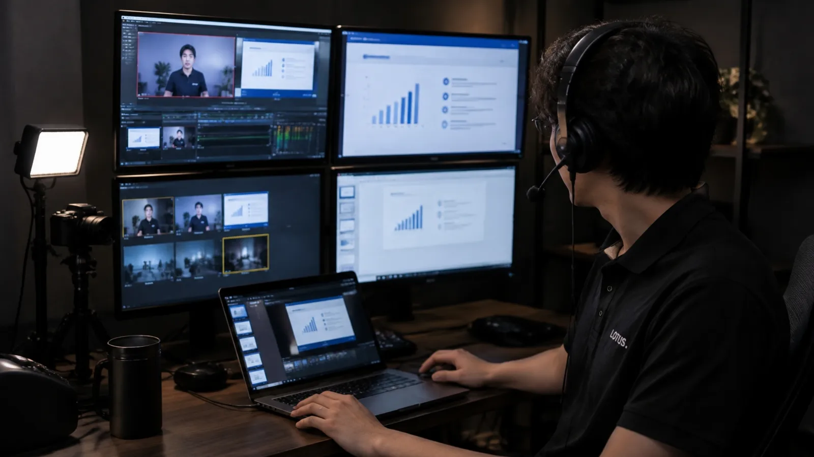

LOTUS VISUAL / FIELD NOTES
CASE 06 / 08配信画面操作
配信の画面を、
進行に合わせて。
担当会場で、配信画面の操作、資料共有、動画音声・録画対象画面の確認に携わりました。
担当した仕事を知るTHE STORY
この現場で、何をしたか。
どんな現場か
完全オンラインのセミナー。上下に分けたPCと操作卓を使い、担当室から配信の画面を扱いました。
求められたこと
共有する画面、動画の音、録画する画面。見せるものと残すものが別々に動く、配信ならではの現場です。
LOTUS VISUAL の持ち場
担当室での配信画面の操作、資料共有、動画音声と録画対象画面の確認に携わりました。
この仕事の勘所
配信では「出ているつもり」が一番こわい。共有画面と録画画面を分けて確かめ、動画の音が視聴者に届いているかを確認する。確認する場所を先に決めておくのが要です。
- V-800HD
- U-TAP
- Zoom
- HyperDeck
案件資料で確認した機材です。保有機材一覧ではありません。
配信と録画の役割
届ける画面と、
残す画面を分けて確かめる。
実際の配線やPCの台数・配置は示していません。
視聴者へ届ける
クラウドに残す
Zoomクラウド録画
この案件では自動録画を設定別系統でも残す
視聴用PCの画面 → HyperDeck
クラウド録画とは別のバックアップ録画配信で見える画面と、資料共有の状態を確認します。
図の見方と担当範囲
Zoomクラウド録画と、視聴用PCの画面をHyperDeckに残す録画は別系統です。機器を直列に並べた構成や、障害時の自動切替を示していません。
LOTUS VISUALの担当は、担当室での画面操作、資料共有、動画音声や録画対象画面の確認。全会場の運営・配信全体の管理を示すものではありません。図は当該案件の記録を説明するもので、現在のソフトや機材の操作手順ではありません。
01 / 画面の構成
共有する画面、動画の音、録画する画面。
完全オンラインのセミナー。上下に分けたPCと操作卓を使用し、資料にはV-800HD、U-TAP、Zoom、HyperDeckが記載されています。
- V-800HD
- U-TAP
- Zoom
- HyperDeck
同じ役割を依頼するときの参考情報
PLAN THE NEXT FIELD
機材と人。
両方から、現場を組み立てる。
ここからは、同種の業務を相談するための一般的な検討例です。
この事例で実際に使った機材・人数・体制を示すものではありません。
機材の役割から考える
映像キャプチャー
外部映像をPCへ取り込む機材の例。PC内の資料共有とは役割が異なります。
機材の役割を見る ↗配信向け映像ミキサー
複数入力と音声を扱う機材の参考。配信方式によって必要性が変わります。
機材の役割を見る ↗特定機種の採用・保有・対応可否を保証するものではありません。実際の構成、電源・支持・適合条件は個別に確認します。
必要なスタッフの役割を考える
配信画面・共有操作担当
表示、資料共有、動画音声、録画対象画面を分けて確認します。
登壇者対応・配信管理担当
登壇者への案内、配信の管理、録画の扱いについて担当を決めます。
人数や兼任の可否は、規模・作業時間・運用条件によって変わります。LOTUS VISUALの担当範囲は相談時に確認します。
相談前に、押さえたい3点
- 01配信方式と参加する人の形態
- 02共有資料と動画音声の有無
- 03録画する画面と担当者
03 / YOUR NEXT SHOW
次の現場を、
一緒に具体化する。
すべてが決まっていなくても大丈夫です。
分かっていることから、お聞かせください。
配信の方式・登壇者の人数・共有資料・動画音声の有無・録画の要否・担当してほしい操作をお知らせください。
この役割をLOTUS VISUALに相談する↗この事例名を引き継いで、内容を整理できます。機材の役割も知りたい方へ
以下は機材の役割を知るための参考ページです。この事例の使用機材や、同等品の指定ではありません。
映像をPCへ取り込む機材の役割を見る ↗